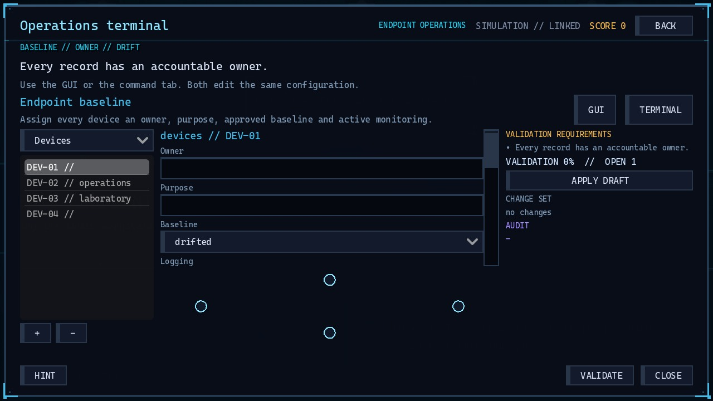
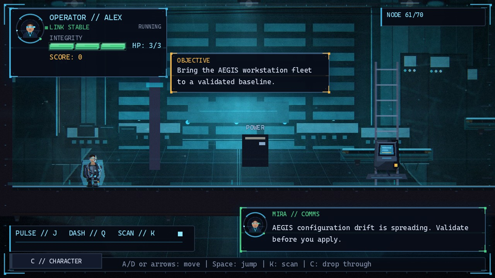
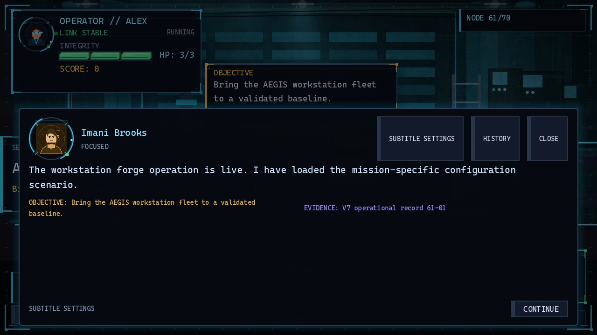
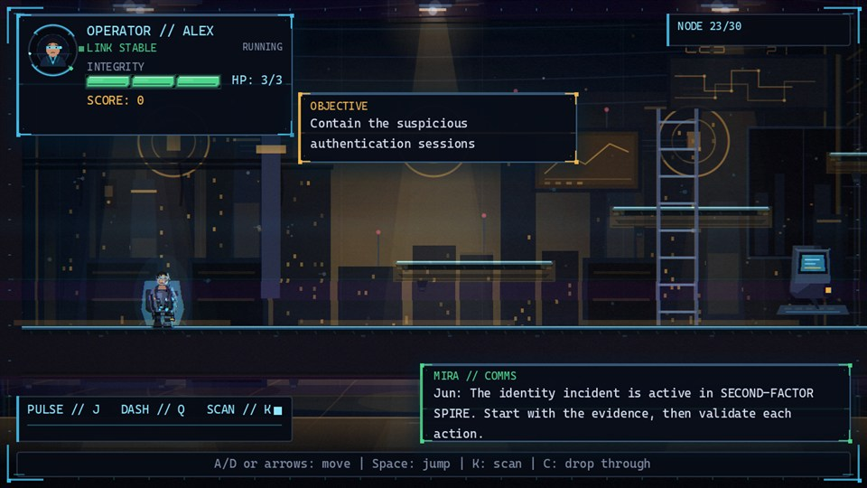
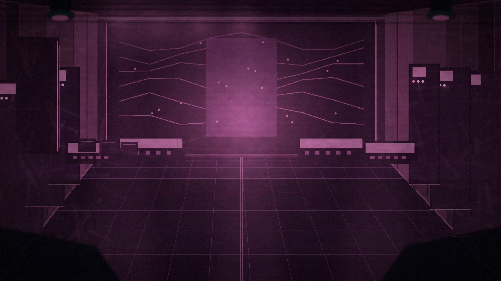
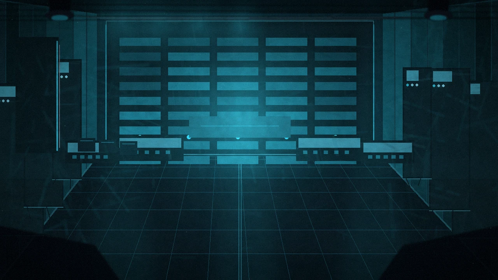
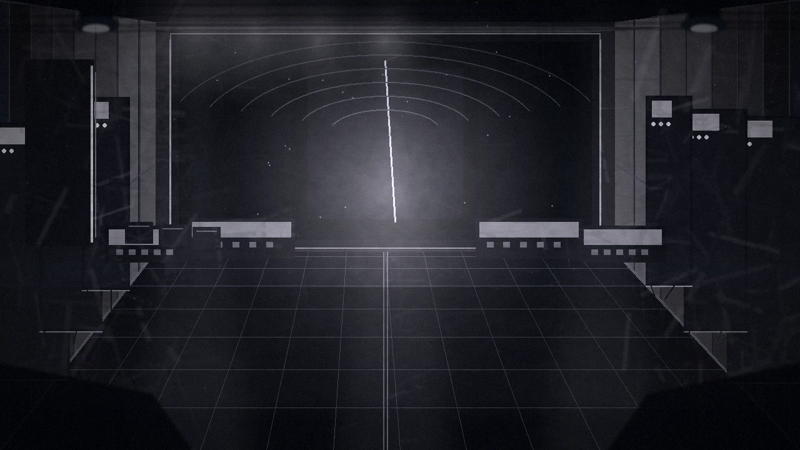
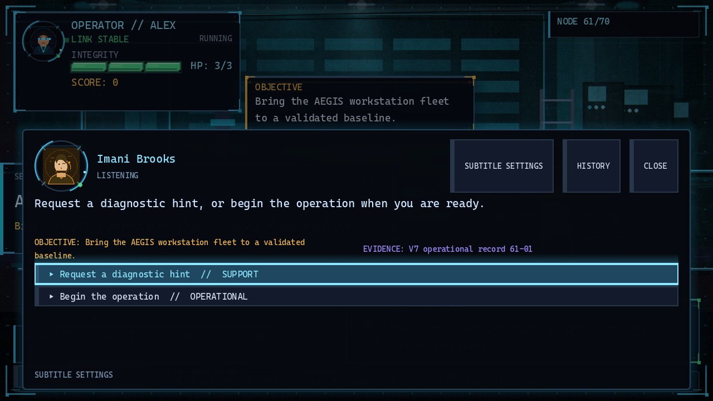

Play first
Responsive movement, readable hazards and fair boss telegraphs come before the lesson. When a platforming beat and a quiz compete for a room's time, the platforming wins.

Cyber Access Protocol is a 2D cyber-security action platformer about a junior operator who survives a locked-down tower, then has to rebuild the living operations campus behind it. Seventy levels. Seven chapters. One record that keeps changing underneath you.



Asterion Tower detects unusual authentication activity at 22:17. Within minutes, doors lock into fail-safe mode, workstations display ransom notes, and the building's automation platform begins issuing conflicting commands.
You are Alex Vale, a junior incident-response trainee on the late shift. You have a Pulse Tool, a scanner, limited authority, and a radio channel to a security lead somewhere else in the building. You are not a super-hacker. You are the person who has to reach the console.
The tower is only the first half. Beyond it, the AEGIS Operations Campus runs the systems the tower depends on: endpoints, networks, identity, cloud, pipelines, detection, incident response, recovery and the human-AI boundary. Every one of them is drifting.
Behind both incidents is the adversary known as the Conductor: patient, deliberate, and attacking the record itself — logs, ownership, trust and the evidence you need to prove what happened.
Every concept is taught through a physical consequence: a firewall that blocks projectiles, segmentation that stops a worm, an approval that unlocks a door, a recovery that brings a service back in the right order.
Responsive movement, readable hazards and fair boss telegraphs come before the lesson. When a platforming beat and a quiz compete for a room's time, the platforming wins.
Configure a rule, correlate a log, preserve an artifact, choose a containment action. Interactive decisions replace lectures, and every answer comes with a clear explanation.
The V7 workbench is a real configuration surface: edit records, validate requirements, compare the draft, read the audit, or do the same work from the fictional command tab.
Restoring a control changes enemy pressure, routes, hazards or objectives. If a precaution has no visible effect on the level, it is not finished.
Alex, Mira, Rhea, Jun, Eli, NOVA, Dr. Sera Malik, Imani Brooks and Professor Voss carry one continuous story from the tower radio to the campus dialogue.
Keyboard and controller, full remapping, high contrast, three colorblind modes, text scaling, reduced motion, touch controls, dialogue subtitles and an RTL Urdu localization.
The campaign begins with a breach on the lower floors, climbs through the tower's networks and identity systems, crosses into cloud and frontier operations, and ends in the campus that keeps the whole region running.

Passwords, malware, networks and identity. The night the tower locked itself down.
Enter chapter →
Routing, DNS, trust zones and resilience. The signal leaves the building.
Enter chapter →
Roles, sessions, privilege and zero trust. The fight moves to who is allowed in.
Enter chapter →
Cloud, keys, pipelines and recovery. The tower's data estate leaves the building.
Enter chapter →
Intelligence, forensics, AI and command. One adversary, three tower epilogues.
Enter chapter →
Edge, OT, privacy, sovereignty and federated command. The campaign leaves the tower.
Enter chapter →
Ten operational domains, one configuration workbench and the Conductor at the core.
Enter chapter →
Ten domains, six endings across two finales, and one record worth defending.
Open the field manual →A room is a complete beat: enter, read the problem, reach the console, change the system, prove the change, then face what is guarding it.
Levels 61–70 are not a second game. They are the same campaign with the gloves off: a real configuration workbench, a persistent operator, a team that talks back, and rooms that remember what you changed.

“The workstation forge operation is live. I have loaded the mission-specific configuration scenario.”
Edit records as a draft, watch every requirement resolve, compare the change set and read the audit tail. The GUI and the command tab edit the same configuration, so the interface never decides the answer for you.
Eight equipment slots, five field tools, six proficiency tracks, a team roster, case files, cosmetics and a personal log that survive between levels.
Sixteen local conversations with portraits, expressions, history, subtitle settings and choices that change the mission. Ask for a hint or begin the operation; the record notes what you chose.
Eight interactive props per level react to tools, credentials and configuration: power returns, panels unlock, evidence becomes available and the room visibly changes around you.
The practical station asks for a complete configuration chain, not a quiz answer. Certified changes are archived in the save and unlock the way forward.
Seventy levels, sixty missions, evidence, replays and two finals are recorded in one save. The archive shows what you completed, how, and which operating model you chose.
Dialogue subtitles, speaker names, history, text scaling, reduced motion, remapping and gamepad focus. The 3D layer is optional and switches off with reduced motion; the content never depends on it.
The interface, dialogue, evidence and archive are available in English and Urdu, with right-to-left mirroring across the campaign and the dialogue history resolving in the current language.
The campaign is playable from the first lobby to the final operating model: seven chapters, sixty missions, twenty-eight specialist disciplines, twenty new bosses and six endings across two finals.
Asterion cyan and amber. Network blue and teal. Identity violet and magenta. Cloud ice. Frontier green. The Living System warm white and warning red. The palette is part of the navigation.
A 2D cyber-security action platformer about a junior operator restoring a locked-down technology tower, then rebuilding the living operations campus behind it.
Seventy levels and sixty missions across seven chapters, from the tower lobby to the AEGIS Operations Campus and the final operating model.
No. It is a single-player, offline game with no account, leaderboard or online requirement.
No. Each room teaches one idea before it tests it, and every answer comes with an explanation. The V7 workbench is introduced one requirement at a time.
Two finals, three outcomes each: coordinated defense, controlled automation or full shutdown at Level 50, and centralized, manual or governed automation at Level 70.
Levels take 8–15 minutes; a typical session runs 30–120 minutes across one to three levels. The full campaign is a multi-evening operation.
Read the campaign map, study the controls, or go straight to the evidence archive. The whole record is here.